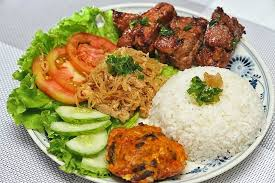

Description
Com Suong is broken rice served with grilled pork chops
Proteins that can be added are grilled chicken, fried eggs, and pig skin.
Ingredients
- pork chop
- broken rice
- soy sauce
- brown sugar
- lemongrass
- cucumber
- tomatoes
- fried egg
- pickled carrots
Steps
- Marinate pork chop with soy sauce and brown sugar.
- Leave in fridge to marinate for at least 2 hours.
- Grease the grill pan with oil and heat it up.
- Transfer the pork chops onto the pan and grill till the meat caramelises and turns slightly charred on both sides.
- Cook the broken rice.
- Transfer the broken rice and pork chops onto a dish.
- Fry egg and add it to the dish.
- Add pickled carrots, tomatoes, and cucumber to the dish.
- Mix fish sauce with some chilli in a small bowl.
Home